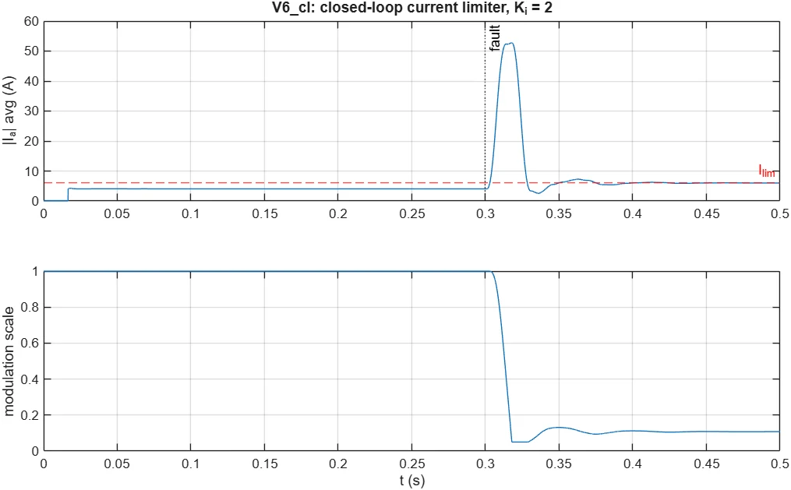

Inside the design · Station 12
Current limiting and fault ride-through
A grid-forming inverter holds its voltage, so when something shorts the output, the short decides the current, not the inverter. This page is about how my design keeps that current at 10 A. It works, with one criterion only partly met, and I say which one below.
Why a voltage source needs a limit
An inverter that follows the grid controls its own current, so it limits itself almost by construction. A grid-forming inverter does the opposite: it controls voltage. If a fault drops the load to a fraction of an ohm, the voltage loop keeps pushing and the current is whatever that small impedance allows. The power switches cannot carry that. The module I picked is a 600 V / 20 A part1.
So the controller has to give up some voltage on purpose when the current gets too high. My test case is a bolted fault on the shared bus: a three-phase 0.5 Ω resistance with 1 mH in series, switched in while the inverters are running2.
How the current is measured
The limiter does not look at all three phases. It takes the phase A current, rectifies it (takes the absolute value) and averages it over one 60 Hz cycle. The result is called Iavg, and the limit is 10 A on that number3. It is a rectified average, so it is neither the peak nor the RMS current, and the real peaks in a fault are higher. In hardware the phase currents would come from three current sensors, which I did not specify.
The one-cycle average is cheap and smooth, but it is slow: it cannot know about a fault until a cycle's worth of data has changed. Every number about timing on this page comes back to that.
One inverter: the closed-loop limiter
My first limiter, from the early models, scaled the voltage by Ilim/I. That does not work, because the current is roughly proportional to the scale, so the loop settles where I is about √(Iunlimited·Ilim), not at the limit. In the test with a 6 A limit it settled at 18.3 A, three times too high4.
The fix (V6_cl) is a proper closed loop: the error Ilim − Iavg goes through a gain Ki,lim into an integrator whose output scales the voltage, limited to 0.05…1. An integrator keeps working until the error is zero, so the current ends up on the limit4.
| Ki | First 20 to 50 ms of the fault | Settled current | Ripple (std) |
|---|---|---|---|
| 1 | 18.9 A | 6.01 A | 0.04 |
| 2 | 10.6 A | 6.02 A | 0.09 |
| 3 | 11.8 A | 6.05 A | 0.55 (rings) |
| 10 | 12.7 A | 8.61 A | 3.88 (unstable) |
I chose Ki = 2. It came back to within ±10 % of the limit 86 ms after the fault and held 6.0 A. In normal operation the scale stays at 1.0 and nothing changes4.

The honest limit of this design is already visible: the first 50 ms or so are still above the limit.
Two inverters: a virtual resistance
With two inverters on one bus the integrating limiter above caused trouble: each one cut its own voltage and the other picked up the current, and the two limiters chased each other in a limit cycle (the story is on the what went wrong page). The parallel design uses a different idea. When the current is over the limit, the inverter subtracts a voltage proportional to its own current from its reference. Subtracting Rv·i is the same as putting a resistor Rv in series with the output, so the harder the load pulls, the more the inverter's voltage sags, and it is a resistor, not a switch, so there is nothing to chatter.
The size of Rv is set by the current error e = Iavg − 10 A:
Rv = Kv·e + Kiv·∫e dt, clamped to 0 … 20 Ω
The gains are Kv = 2 Ω/A and Kiv = 40 Ω/(A·s). In normal operation e is negative, the integrator sits at its lower clamp and Rv = 0, so the limiter has no effect at all until the current goes over 10 A5. The drop is subtracted from the voltage reference, not from the modulation, so the voltage loop tracks it instead of fighting it. There is a one-sample (10 µs) delay in the path; without it the model had an algebraic loop and a 3 s run had not finished after 35 minutes.
How it got there
Proportional only (V12) left an error. With only the Kv term the inverter settles where the sag is just enough to hold the current, and that point is above the limit: I = Ilim + Rv/Kv = 10 + 2.9/2 ≈ 11.4 A. In the test the current settled at 11.44 and 11.39 A, above the 10.5 A pass line. Raising the cap on Rv would not help, because the cap was never reached7.
A bigger gain oscillated. With Kv = 10 the average current came closer (10.73 and 10.57 A) but the virtual resistance swung up to 17.2 Ω and the phase current peaked at 69 and 65 A in the last 0.2 s, with the two frequencies drifting apart. The loop was too fast for a measurement that takes a full cycle to update8.
Adding integral action fixed it. I went back to Kv = 2 and added the integral term. The current settled on 10.000 A in both inverters with no oscillation and no DC in the phase current9. Doubling the integral gain to 80 would have saved about 20 ms but adds ripple and reduces margin, so I kept 4010.
Then the virtual reactance arrived. The final design also carries a permanent virtual reactance (explained on the parallel operation page). A first version of it included a 10 ms low-pass on Rv, which put lag inside the current loop and caused a growing oscillation of about 35 Hz in the fault test. I removed the low-pass, and the fault was then held cleanly, and the transient was softer than without the reactance11.
The final fault test
The last run used the finished V13 model: fault at 0.5 s, 1.0 s run, both inverters. Both were held on the limit and settled without oscillation6.
| Design | Settled Iavg | Peak Iavg | Back within +10 % | Back within +5 % |
|---|---|---|---|---|
| V12, proportional only | 11.44 / 11.39 A | 14.4 / 14.0 A | not within 500 ms | |
| V13, proportional + integral | 10.000 / 10.000 A | 14.1 / 13.8 A | 81 / 79 ms | 138 / 118 ms |
| V13 final, with scaled virtual reactance | 9.999 / 10.001 A | 13.43 / 13.29 A | 82 / 59 ms | 141 / 97 ms |
There is a second cost in the final design that I want to state plainly. The peak phase currents in the first cycles of the fault were 41 A and 43 A, because inverter 2 now has half the virtual reactance of inverter 1. With equal reactance they were 29 and 30 A, and with none, 47 and 46 A6. These instantaneous peaks are above the module's 20 A rating. A model with an average-value converter does not show what that would do to the switches. In hardware the first cycles would be covered by the short-circuit protection built into the power module, not by my controller. I have not designed or tested that, so I do not count it as a result.
One side note: during the fault the two inverters supplied 315 and 227 VAR of reactive power, because the fault branch includes 1 mH6.
Sources for this page
- Scrollytelling brief, section 2: Infineon IKCM20L60GD, 600 V / 20 A, switched at 10 kHz; manual V11. ↩
- V13, D27 (bolted fault: 0.5 Ω + 1 mH on the shared bus); brief, section 2. ↩
- Brief, section 2, item 9: phase-A current, rectified, one-cycle average, 10 A limit; D5 (rectified average against RMS). ↩
- Decision log D4,
v6_cl_sweep.txt: V6 scale = I_lim/I settled at 18.3 A against a 6 A limit; V6_cl with Ki = 2 held 6.02 A, within ±10 % at 86 ms. ↩ - V13, D9 and D16: Rv = Kv·e + Kiv·∫e, Kv = 2 Ω/A, Kiv = 40 Ω/(A·s), clamp 0 to 20 Ω; D13 (drop subtracted from the voltage reference). ↩
- V13, D27. Decision log,
compare_v13final_fault.txt: fault 0.5 s, 1.0 s run; peak phase currents 41 / 43 A; equal-Xv and no-Xv comparison from D25 and D17. - V12, D15.
compare_v12_fault.txt: settled 11.44 / 11.39 A, peak I_avg 14.4 / 14.0 A, Rv settled at 2.9 / 2.8 Ω, still above 10.5 A at the end of the run (500 ms). ↩ - V13, D16.
compare_v13k2_kv10_fault.txt: Kv = 10, I_avg 10.73 / 10.57 A, Rv up to 17.2 / 16.5 Ω, ia peaks 69 / 65 A. ↩ - V13, D17.
compare_v13pi_fault.txt: I_avg 10.000 / 10.000 A, peak 14.1 / 13.8 A, within +10 % at 81 / 79 ms, within +5 % at 138 / 118 ms. ↩ - V13, D19.
compare_v13pi80_fault.txt: Kiv = 80 gave +5 % at 119 / 99 ms; Kiv = 40 kept. D19 and D27 for the "partly met" wording and the IPM short-circuit protection note. ↩ - V13, D24 and D25: the Rv low-pass caused a growing ~35 Hz oscillation; removing it gave 10.001 / 10.002 A with peak I_avg 13.1 / 12.9 A (13.43 / 13.29 A in the final model with scaled Xv). ↩